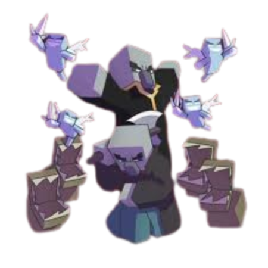

Made by Notch"Markus Persson"
somepeople say that the ancient builders made some of the best builders in the game and that they made some of the building in the game like the desert temples,jungle temples,and ocean monuments.then one dat there was the wither incident the builders were trying to bring back the dead but then the experiment backfired by creating the wither a destructive force that decimated thier civilzation.then the great escape happend To survive the Wither the remaining builders fled underground creating Strongholds and Ancient Cities. There they accidentally unleashed the Warden while experimenting with portals to other dimensions.The evolution of endermen With nowhere else to go the builders escaped through End Portals to The End. Trapped in a void with only chorus fruit to eat they slowly mutated into Endermen losing their humanity and ability to build but retaining a subconscious instinct to pick up blocks.what the player does you play as (steve or alex) you are the first person to "wake up" in the ruined world long after these events. your jurney is to defeat the ENDER DRAGON.


what are villagers and illagers villagers are peaceful but they are a less advanced human race they stayed behide after the builders left.The illagers are outcasts who were banished for practicing forbidden magic and attempted to get the power of the ancient builders through "unspeakable acts"The undead the zombies and skeletons are the animated remains of those who didn't escape the intial collapse or were corrupted by the wither's plague.The piglins are frome the nether they once invaded the overworld but were pushed back leaving behind the Ruined Portals found across the world


Image by DA-GameCovers image can be found on DeviantArt
Image by lockrikard you can find it at DeviantArt
SurvivalCreative